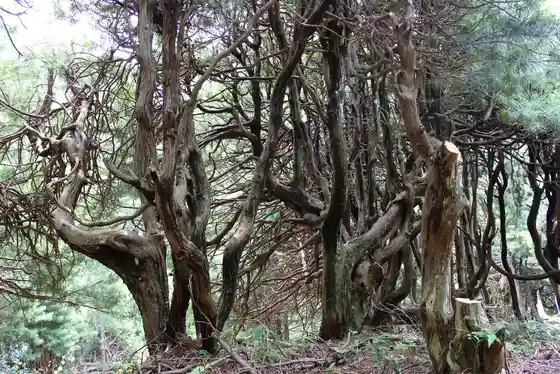
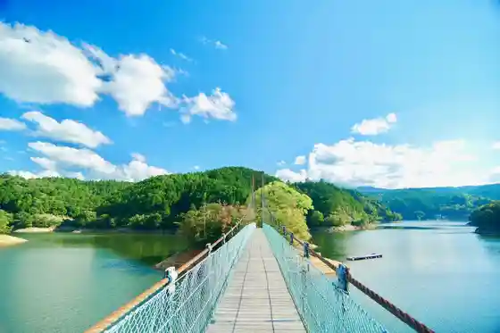
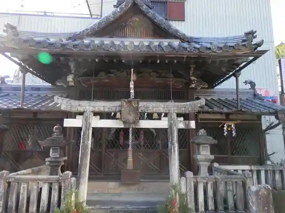
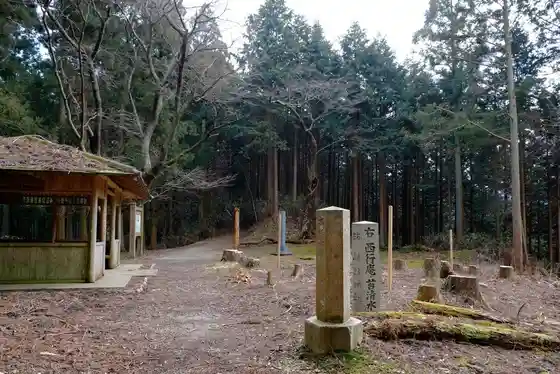

𠮷 Mizu Shrine
Yoshino, Nara · 07463-2-3024 · Official / source link
Koyamaki Gunraku
Yoshino, Nara · 0746-39-9237 · Official / source link

Ippan Shadanhojin Yoshino Bijitazubyuro
Yoshino, Nara · 0746-39-9237 · Official / source link

Ue City Ebisu Shrine
Yoshino, Nara · 0746-32-3081 · Official / source link

Rokkaku Hashira Dohyo
Yoshino, Nara · 0746-39-9237 · Official / source link

Katte Shrine
Yoshino, Nara · 0746-39-9237 · Official / source link
Yoshino Yama
Yoshino, Nara · 0746-32-1007 · Official / source link
Yoshino Kawa (Yoshino Ryuiki)
Yoshino, Nara · 07463-2-5236 · Official / source link
Yoshino Asa Kyuseki
Yoshino, Nara · 0746-32-8371 · Official / source link
Yoshino History Museum
Yoshino, Nara · 0746-32-1349 · Official / source link
Yoshino Suibun Shrine
Yoshino, Nara · 0746-32-3012 · Official / source link
Yoshino Shrine
Yoshino, Nara · 0746-32-3088 · Official / source link
Yoshino Noten Daijin
Yoshino, Nara · 0746-32-4880 · Official / source link
Yoshizo In
Yoshino, Nara · 0746-32-3014 · Official / source link
Dainichi Tera
Yoshino, Nara · 0746-32-4354 · Official / source link
Bridge (Yoshino)
Yoshino, Nara · Official / source link
Tenchi no Terasu Yushio FARM & EXPERIENCE
Yoshino, Nara · 0747-26-1831 · Official / source link
Tenmu Tenno Kahi
Yoshino, Nara · 0746-39-9237 · Official / source link
Ten'o Hashi
Yoshino, Nara · Official / source link
Nyoi Wa Tera
Yoshino, Nara · 0746-32-3008 · Official / source link
Imoyama Juso
Yoshino, Nara · 07463-2-8965 · Official / source link
Miyataki
Yoshino, Nara · 0746-39-9237 · Official / source link
Miyataki Iseki
Yoshino, Nara · 0746-39-9237 · Official / source link
Hiroshi Gan Tera
Yoshino, Nara · 0746-39-9237 · Official / source link
Toku Zen Tera
Yoshino, Nara · 0747-22-4001 · Official / source link
Murakami Yoshimitsu Haka
Yoshino, Nara · 0746-39-9237 · Official / source link
Tonan In
Yoshino, Nara · 0746-39-9237 · Official / source link
Kaki Museum
Yoshino, Nara · 0747-24-0061 · Official / source link
Sakuragi Shrine
Yoshino, Nara · 0746-39-9237 · Official / source link
Sakuramoto Bo
Yoshino, Nara · 0746-32-5011 · Official / source link
Tsu Furo Mizumi
Yoshino, Nara · 0746-32-2847 · Official / source link
Jo Mihara Shrine
Yoshino, Nara · 0746-32-3081 · Official / source link
Prefectural Yoshino Kawa Tsu Furo Nature Park
Yoshino, Nara · 0742-27-8757 · Official / source link
Ryu Zai Toge
Yoshino, Nara · 0746-39-9237 · Official / source link
Chikurin In
Yoshino, Nara · 0746-32-8081 · Official / source link
Kami Suki Village
Yoshino, Nara · 0746-36-6838 · Official / source link
Basho Kuhi (Shita Sembon Arashiyama)
Yoshino, Nara · 0746-39-9237 · Official / source link
Hana Yagura (Yoshino Yama)
Yoshino, Nara · 0746-39-9237 · Official / source link
Koke Shimizu
Yoshino, Nara · 0746-39-9237 · Official / source link
Ho no Shujaku Satsueichi Kinenhi
Yoshino, Nara · 0747-22-4001 · Official / source link
Saigyo Iori
Yoshino, Nara · 0746-32-1007 · Official / source link
Kana Nama Umebayashi
Yoshino, Nara · 0747-22-4001 · Official / source link
Mitake Tera
Yoshino, Nara · 0746-32-8371 · Official / source link
Mitake Tera Nio Mon
Yoshino, Nara · 0746-32-8371 · Official / source link
Mitake Tera Kuromon
Yoshino, Nara · 0746-32-8371 · Official / source link
Kinpo Shrine
Yoshino, Nara · 0746-32-3012 · Official / source link
Do Torii
Yoshino, Nara · 0746-32-8371 · Official / source link
Takagi Yama (Yoshino)
Yoshino, Nara · 0746-39-9237 · Official / source link
Ryumon Gaku
Yoshino, Nara · 0746-39-9237 · Official / source link